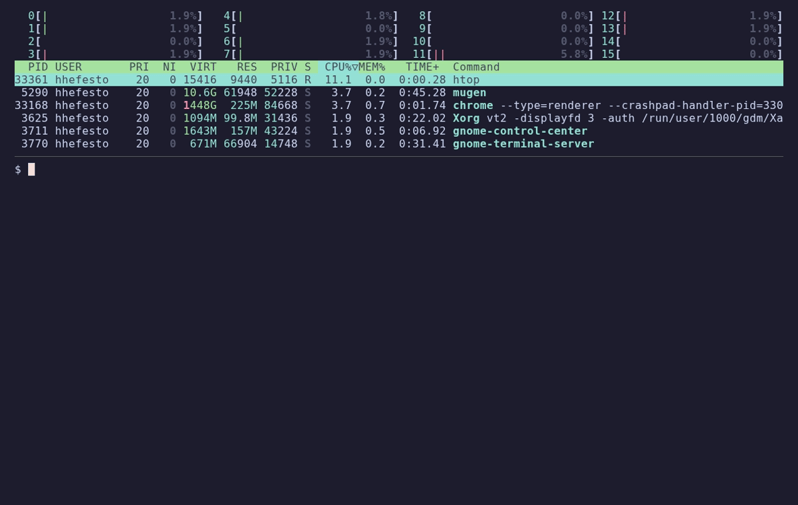

ana
A language model with a proven meaning, and one language from the proofs to the GPU: Bend.
ana's specification is a set of theorems that Bend's compiler checks. The model, the GPU trainer and its backprop, the tokenizer, the decoder and the tools that build the training data are Bend programs too, and the fast code is a proven refinement of the meaning. 115M parameters, GPT-2 small's shape, trained as a coding agent for Haskell, Agda, Lean, Bend and Nix on a few rented consumer GPUs.
- open source · MIT
- open spec, proven
- open trainer
- open data pipeline
- open weights · coming to Hugging Face
What makes ana different
- One language from proof to GPU. The laws about the model and the code that trains it on a GPU are the same Bend: Bend's checker proves the spec, and Bend's compiler runs the trainer. As far as I know, no other language model has its specification, its proofs, its trainer and its backprop in one language.
- The meaning comes first. Following Conal Elliott's denotational design, ana states what the model means (a weighted language, unfolded token by token), proves the laws on that meaning, and makes the fast code a refinement: chunked attention is proven equal to the recurrent one, the derived backprop obeys the transpose law, and the executable attention step is proven to compute the spec's formula.
- Its probabilities have a proven structure. Tai-Danae Bradley's enriched category of texts is a theorem about ana's own model: prefixes and their extensions form a category whose composition is the chain rule.
- It acts; the tools answer. ana is trained as an agent that writes code and calls the real compiler. Every compiler message in its data came from the compiler. It never learns to write a tool's answer itself.
- Small, cheap and reproducible. Every GPU hour since the project began in July 2026, all runs and false starts together, cost about $150; one full 115M run is about $16. Every run, decision, failure and eval is written down in the repo, and every number on this page can be reproduced from it.
The promise
Bend's bet is that AI will write the code and proofs will check it. ana is a model built for that bet from the first line:
- it learns in the loop it is meant to work in: write a term, the real checker answers, try again;
- its own meaning is stated and proven in the language it is learning to write;
- the Bend it will learn from next is translated and checked: every translated example has passed Bend's checker;
- it is small enough that a whole run costs about as much as a dinner, so the loop can be iterated, in public, by anyone.
The early signs are there. From run 2 to run 3, at the same 115M size, the share of 99 held-out tasks that the real checker accepts on the first try went from 19 to 32, and within four tries from 25 to 37 (paired exact McNemar, p < 0.01 on both). On Bend itself, 4 of 6 held-out tasks pass on the first try (a small sample). And it already writes a correct Haskell quicksort, shown below.
Why Bend
Proofs and speed in one language. Bend 2 is a dependently typed language with a fast proof checker (ana's whole gate checks in about 3 seconds) that compiles the same code to C, CUDA, Metal or JavaScript. That is what lets ana keep one codebase: the theorem about chunked attention and the CUDA step that uses it are read by one compiler.
Parallel by structure. ana's reference tensors are balanced binary trees, and every combinator splits at
each node. This is ana's matrix-vector product, unchanged from bend/Tensor.bend:
def M.matvec(+m: M, +x: V) -> V:
match m:
case ML{row}:
VL{V.dot(row, x)}
case MN{l, r}:
a b = M.matvec(l, x) M.matvec(r, x) # two calls in one let: a fork
VN{a, b}
case MZ{}:
VZ{}There are no threads, locks or kernels in it. Bend's runtime spreads the two halves over the cores and joins
them back. Here is ana's tree decoder at its 115M shapes (bend/Bench.bend, synthetic weights) at one
thread and at sixteen, with htop above:

--threads changes, and the checksum is the same bit for bit.| threads | 1 | 2 | 4 | 8 | 16 |
|---|---|---|---|---|---|
| 4 decode steps, 115M shapes | 6,977 ms | 3,820 ms | 2,091 ms | 1,198 ms | 923 ms |
| speedup | 1.0× | 1.8× | 3.3× | 5.8× | 7.6× |
The tree decoder is ana's reference, the meaning in executable form. The production decoder runs on a flat store with Bend's bulk ops (threaded CPU kernels, or cuBLAS and generated CUDA kernels on a GPU) and does about 21 ms per token on the same machine. Pure matrix-vector passes stop scaling at about 2.5× here: they wait on memory bandwidth, not on cores.
Interaction nets, and what Bend 2 kept from them. Bend comes from interaction nets. HVM, the runtime of Bend 1, evaluates Lafont's interaction combinators: a program is a graph, every rewrite is local, and so every redex can fire in parallel without locks. That is exactly the shape of this work: a neural network is a big dataflow graph of local, independent pieces of arithmetic, and a proof-heavy codebase wants a runtime with no hidden shared state. Bend 2, which ana uses, keeps those goals and drops the graph. Its runtime, BendRT, gets the same locality from the type system: values are affine, so each has one owner, a forked task owns its arguments, and nothing is shared unless the compiler placed the share. The price is that forks must be balanced; ana's trees are balanced by construction. (See the BendRT paper, whose related-work section says this.)
The GPU without writing kernels. The dense trainer is a Bend program over three bulk ops, matrix
products and an einsum over up to six loop indices. On a CUDA build the products go to cuBLAS and each
einsum expression becomes a kernel, compiled at run time and cached. A training step is a list of ops,
just data, and its backward pass is computed from that list by a program transformation (Elliott's, below).
The meaning first: Conal Elliott's work in ana
Denotational design
Say what a thing means, prove the laws on the meaning, and make every implementation a refinement of it.
In ana the meanings are bend/Spec/ (22 files, 127 laws) and the refinements are proven against the
executable code, not copies of it. bend/Spec/Refinement.bend proves that entry (c, j) of
Model.bend's attention-state update is exactly the spec's αc·S[c][j] +
k̂c·v[j]. bend/Spec/Linear.bend proves the recurrent and the chunked
forms of gated linear attention are one function, which is the license for the GPU trainer to run it in chunks.
Floating point is axiomatic in Bend, so the one trusted part is bend/Spec/Trusted.bend: what F32
arithmetic, exp and rsqrt must satisfy, assumed rather than proven.
A model is a weighted language
From Elliott's Symbolic and automatic differentiation
of languages: a language is a function from words to weights, and it is determined by two observations, the
weight of the empty word (ν) and the residual after one token (δ). bend/Spec/Weighted.bend and
bend/Spec/Trie.bend state that presentation (the trie is unfolded by depth, since Bend has no
coinduction). bend/Spec/Autoregressive.bend then says what ana is: a state algebra, a coalgebra, whose
denotation is such a weighted language. A word's weight is the product of the step weights, path weights factor
at every cut, and a residual of the model's language is the state it reaches, scaled by the path's weight. Decoding
(Decoding.bend) and speculative decoding's exactness (SpeculativeDecoding.bend) are
stated on that meaning. That is also the name: ana is an anamorphism, the unfold of that coalgebra.
Backprop as a program transformation
From The simple essence of automatic differentiation:
reverse mode is not a tape but a transformation of programs, and its law is that the transpose of a composite is
the composite of the transposes, in the opposite order. bend/Spec/Reverse.bend proves the chain rules
for dual maps and augmented reverse derivatives (composition and pairing), and Batch.bend proves that
pullbacks accumulate over sums and batches. In the GPU trainer (bend/Dense/Op.bend) the backward pass is
derived from the forward program: a product's transpose is two products, an einsum's transpose
multiplies the output tangent by the symbolic derivative of its expression, and a gather's is a scatter-add.
bend/Spec/Dense.bend proves the structural law (the transpose of xs ++ ys is
ys's transpose followed by xs's); the numbers are tested: GPU gradients match the
reference trainer's to 4.5e-7 relative.
Semirings in the data pipeline
legere, the tool that splits coding sessions into prose and code for the corpus, has one meaning
in a semiring: a text's weight is the sum over every labelling of the product of its weights. With Booleans that
asks whether a text is well formed, with naturals how many segmentations it has, with log-probabilities the
marginal, with (max, +) the best labelling. It is Elliott's convolution semiring and Goodman's semiring parsing.
The spec enumerates every labelling; the fast forward pass is its memoized derivative.
Tai-Danae Bradley's category of texts in ana
In An enriched category theory of language: from syntax to semantics, Bradley, Terilla and Vlassopoulos turn a language model's probabilities into a category: the objects are texts, there is an arrow from one text to another when the second extends the first, and the arrow carries the probability of that extension. It is a category enriched over the unit interval, and it holds both what goes with what (syntax) and, through the Yoneda embedding, what a text means (semantics: a text is known by the extensions it has).
In ana this is a theorem about the model, not an analogy. bend/Spec/Bradley.bend builds the
category from ana's own state algebra: objects are token prefixes within a cutoff (recording whether they end), a
morphism from xs to ys is the evidence that xs is a prefix of ys,
and its hom-weight is the model's path weight of the extension. It proves that identities weigh one and that
composing two extensions multiplies their weights, which is exactly the factorization law of
Autoregressive.bend: the chain rule of probability, as the composition of a category. The weights live
in an ordered multiplicative monoid (bend/Spec/Algebra.bend), the cost structure Bradley's
enrichment needs. Because ana is autoregressive, it learns the right-extension half of that category, as the
paper's published version notes for one-directional models.
The semantic half goes through the Yoneda lemma, and the Yoneda lemma's dependency cone in Agda's category theory library is exactly what agda2bend is translating into Bend right now (below).
The model: GPT-2 small's shape
| ana | GPT-2 small | |
|---|---|---|
| parameters | 115.4M | 124M |
| layers | 12 | 12 |
| width | 768 | 768 |
| heads | 12 | 12 |
| context | 2,048 | 1,024 |
| vocabulary | 32,768 | 50,257 |
A hybrid stack: three gated linear-attention layers for every softmax layer, with RG-LRU
gates, qk-norm, attention sinks and a tied head. The tokenizer, code32k, is a byte-level BPE
trained for code.
The trainer, and what it cost
The dense trainer is Bend compiled to CUDA. Before it was trusted, it had to agree with the slow tree trainer: its gradients match the CPU's to within 4.5e-7 relative, on an RTX 3090 and on an RTX 5090. When the project moved from its earlier Haskell trainer to Bend, the Bend run continued the Haskell one step for step (loss within ~5e-6), and greedy decoding was byte-identical.
| measured | |
|---|---|
| RTX 5090, batch 16 × 2,048 tokens | 1.95 s/step, 16,781 tok/s |
| RTX 3090, same batch | 5.18 s/step, 6,317 tok/s |
| a whole run (run 2: 53,880 steps, ~28 h on a rented 5090 at $0.58/h) | about $16 |
| every rented GPU hour since the project began (July 2026): all runs, Haskell era included, and the false starts | about $150 |
No cluster, no grant, no lab: consumer GPUs rented by the hour on vast.ai, from about $0.50/h. The Bend tools
in bend/Box/ stage the data, run the chain of stages, pull and verify the checkpoints, watch the credit,
and destroy the box when the run ends.
The data: ana acts, the compiler answers
ana is trained as a coding agent for functional languages. Its episodes are transcripts: a task, ana's
## Term, then the real tool's answer (ghc, agda, lean,
bend, nix) and ana again, up to four turns. Every compiler message it reads was produced by
the compiler. The tool's turns are context, never training targets.
- Raw code in its five languages: 232,923 Haskell, 23,608 Nix, 16,007 Lean, 8,112 Agda and 1,667 Bend files.
- Transcripts built from that code by the real checkers: direct tasks (write it) and repairs (fix a wrong attempt).
- On-policy rounds: ana's own episodes, run on the box against the real compilers, become new training data: its successes, and its rejected terms followed by the known fix.
More Bend to learn from: hs2bend, agda2bend, lean2bend
Bend 2 is a young language, so there is little of it in the world: 1,667 Bend files against 232,923 Haskell ones. I'm working on translating the languages that have large, checked libraries into Bend, to grow the Bend ana learns from. Each translation is gated by Bend's own checker, so every example that enters the corpus compiles.
- agda2bend: a compiler, an Agda backend that emits Bend 2. Agda's category theory library's
Categories.Category.Coretranslates completely, and on the Yoneda lemma's dependency cone more than three quarters of the roughly 2,500 items already check. The rest wait on gaps between the two type theories, among them an eta rule for records that Bend doesn't have yet. - hs2bend: 1,003 Haskell modules that use only
base, translated by coding agents. A module counts only if Bend's checker accepts it and a differential test passes: the Haskell original, run by GHC, must print exactly what the Bend version prints. 81 modules (12,094 lines of Bend) are done so far. - lean2bend: the same idea for Lean and its libraries, being explored now.
- Alongside them, collection: 2,357 new Bend files from BendHub and GitHub for the next run, about twice all the raw Bend before.
Results, honestly
99 held-out tasks across the five languages. E1: ana's first answer is accepted by the real checker. E5: accepted within four calls, reading the checker's answers in between.
| checkpoint | E1 | E5 |
|---|---|---|
run 3, s2-step56725 | 32/99 | 37/99 |
run 2, v2-step53880 | 19/99 | 25/99 |
Run 3 against run 2: p = 0.00 on E1 and 0.01 on E5 (paired, exact McNemar). E1 by language at run 3's end: Haskell 15/31, Bend 4/6, Agda 3/7, Lean 9/46, Nix 1/9.
What it writes: a quicksort
A prompt from ana's probes: the task, the types it may use, and the type to inhabit. Everything after
## Term is ana's, from s2-step56725, first try, unedited. The ## ghc turn is
the real GHC.
## User
Define `quicksort`.
## Context
filter :: (a -> Bool) -> [a] -> [a]
(++) :: [a] -> [a] -> [a]
## Type
quicksort :: Ord a => [a] -> [a]
## Term -- ana writes from here
quicksort [] = []
quicksort (x:xs) =
let smallerSorted = quicksort [a | a <- xs, a <= x]
biggerSorted = quicksort [a | a <- xs, a > x]
in smallerSorted ++ [x] ++ biggerSorted
## ghc
[1 of 1] Compiling Unit ( Unit.hs, nothing )
[exit 0]GHC accepting it only says it type-checks, so I tested it: on 2,000 random lists with duplicates it agrees
with Data.List.sort on every one.
What these numbers don't say: "accepted" means it type-checks, not that it's right. The quicksort is the textbook one, word for word the one in Learn You a Haskell, so ana has most likely seen it, and other checkpoints sometimes write a version that drops duplicates. When a call fails, ana still resubmits nearly the same term most of the time, so it has barely learnt to read errors yet. Run 4, a first on-policy round, didn't move the agent measures. There is no instruction tuning. This is a small model, early, and every number here can be reproduced from the repo.
Earlier versions were trained on English: v1 (10.6M parameters) reached 1.21 bits per byte on held-out Wikipedia; the 115M v2 reached 1.37 bpb on enwik8.
What's open
- Source: all of it, MIT. The spec, the model, the trainer, the decoder, the evals, the corpus tools and the run tools.
- Proofs:
bend bend/Everything.bendchecks them on your machine. - Data: the tools and recipes that build every corpus, and the two tokenizers in
weights/. - Weights: the 115M checkpoints go on Hugging Face (link here when they're up). The 10.6M v1 checkpoint is
in git at the tag
haskell-final. - Records:
HANDOFF.mdanddocs/log every run, decision, failure and eval.
Try it
git clone https://github.com/hhefesto/ana && cd ana
nix run .#bend -- bend/Everything.bend # check the spec: ALL PROOFS CHECK
nix flake check # spec, unit tests, trainer and dense-trainer checks
nix develop # bend, ghc, agda, lean
nix build .#bend-bench && PRESET=bpe100m STEPS=4 ./result/bin/bend-bench --threads 16
nix run .#ana -- --checkpoint PATH "quicksort" # generate from a checkpointTEMPERATURE, TOP_K, TOP_P and SAMPLE_SEED control sampling.
Next
- More checked Bend from hs2bend, agda2bend and lean2bend, and the next run on it.
- Teaching ana to read the compiler's answer instead of resubmitting, with more on-policy data.
- The weights on Hugging Face, and instruction tuning, so it can be talked to.
Thanks
Victor Taelin and HigherOrderCO for Bend; Conal Elliott for denotational design and the essence of AD; Tai-Danae Bradley, John Terilla and Yiannis Vlassopoulos for the category theory of language.